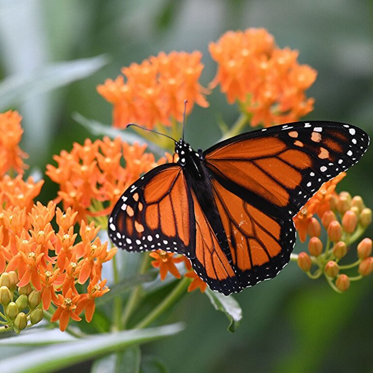

Home
Home Ants
Ants Bees
Bees Beetles
Beetles Butterflies
Butterflies Cockroaches
Cockroaches Flies
Flies Mosquitoes
Mosquitoes Spiders
Spiders Newsletter
Newsletter
Description
The large and brilliantly-colored monarch butterfly is among the most easily recognizable of the butterfly species that call North America home. They have two sets of wings and a wingspan of three to four inches (7 to 10 centimeters). Their wings are a deep orange with black borders and veins, and white spots along the edges. The underside of the wings is pale orange. Male monarchs have two black spots in the center of their hind wings, which females lack. These spots are scent glands that help males attract female mates. Females have thicker wing veins than males. The butterfly’s body is black with white markings.
Monarch caterpillars are striped with yellow, black, and white bands, and reach lengths of two inches (five centimeters) before metamorphosis. They have a set of antennae-like tentacles at each end of their body. The monarch chrysalis, where the caterpillar undergoes metamorphosis into the winged adult butterfly, is a beautiful seafoam green with tiny yellow spots along its edge.
Range
There are over 20,000 bee species worldwide, including the honey bee which originated in Eurasia and has been imported around the globe as a domesticated species. Wild bee species live on every continent except Antarctica. In North America, there are approximately 4,000 native bee species occupying ecosystems from forests to deserts to grasslands.
Source: National Wildlife Federation
Butterflies
Diet
Monarchs, like all butterflies, have a different diet during their larval caterpillar phase than they do as winged adults. As caterpillars, monarchs feed exclusively on the leaves of milkweed, wildflowers in the genus Asclepias. North America has several dozen native milkweed species with which monarchs coevolved and upon which they rely to complete their life cycle.
Milkweed produces glycoside toxins to deter animals from eating them, but monarchs have evolved immunity to these toxins. As they feed, monarch caterpillars store up the toxins in their body, making them taste bad, which in turn deters their predators. The toxins remain in their system even after metamorphosis, protecting them as adult butterflies as well.
As adults, monarchs feed on nectar from a wide range of blooming native plants, including milkweed.
Behavior
Monarchs lay their eggs on milkweed, their only caterpillar host plant. It takes three to five days for the egg to hatch. After hatching and consuming their empty egg case, monarch caterpillars feed exclusively on milkweed. The caterpillars grow and molt several times over roughly a two-week period and then form a chrysalis in which they undergo metamorphosis. After approximately another two weeks within the chrysalis, they emerge as adult butterflies. Most adult monarchs only live for a few weeks, searching for food in the form of flower nectar, for mates, and for milkweed on which to lay their eggs.
Conservation
The monarch population has declined by approximately 90 percent since the 1990s. Monarchs face habitat loss and fragmentation in the United States and Mexico. For example, over 90 percent of the grassland ecosystems along the eastern monarch’s central migratory flyway corridor have been lost, converted to intensive agriculture or urban development. Pesticides are also a danger. Herbicides kill both native nectar plants where adult monarchs feed, as well as the milkweed their caterpillars need as host plants. Insecticides kill the monarchs themselves. Climate change alters the timing of migration as well as weather patterns, posing a risk to monarchs during migration and while overwintering. The U.S. Fish & Wildlife Service is currently reviewing the species’ status.
Fun Fact
Monarch butterflies communicate with scents and colors. The males attract females to mate by releasing chemicals from scent glands on the hind wings. Monarchs signal to other animals that they are poisonous by having bright orange wings. The bright colors serve as a warning that predators should attack at their own risk.